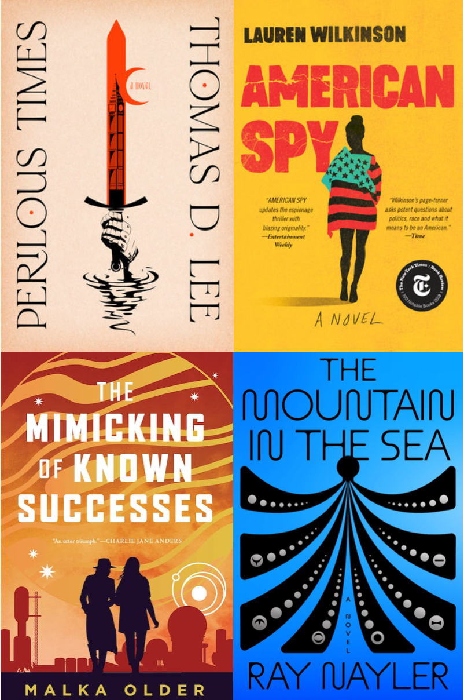

I managed to read 28 novels in 2023. Most of these were climate fiction since that remains a teaching (and possibly research) interest.
In no particular order, my favorite novels from this past year include:
- Lauren Wilkinson, American Spy
- Thomas D. Lee, Perilous Times
- Malka Older, The Mimicking of Known Successes
- Ray Nayler, The Mountain in the Sea
Another book that I really enjoyed, but wasn’t quite self-contained enough for me to list here is A Psalm for the Wild-Built, Becky Chambers’s first novel in her new cozy CliFi series. I’m anxiously awaiting the next volumes in the series.
Becky Chambers and Annalee Newitz talk about cozy science fiction more generally in their terrific talk at The Interval, entitled Resisting Dystopia. The idea of resisting dystopia is, in fact, one of the guiding principles of the class I am teaching with Margaret Levi and Paula Moya this quarter. It’s not always easy, I’m afraid.
Malka Older’s amazing The Mimicking of Known Successes is, apparently, also considered to be of the cozy genre, though I found the setting for it pretty terrifying. A devastated Earth and a scholarly outpost on a gas giant inhospitable to life doesn’t strike me as canonically “cozy,” but I guess there is lots of tea-drinking in academic chambers.
One of these things is perhaps not like the others, so merits a moment’s reflection. Wilkinson’s American Spy is a masterful modern take on the spy novel. I think that there are three necessary elements to a successful spy novel. First, and most importantly, there must be moral ambiguity. If it’s not morally ambiguous, are you even spying, bro? Second, there needs to be geographic specificity. The reader needs enough detail to be transported to where the action is, whether it is in some exotic locale, the streets of New York City or London, or the back roads of northern Virginia. Finally, what would a spy novel be without tradecraft? And I don’t mean the Q-esque gadgets here. Neither George Smilely nor Marie Mitchell have—nor need—flame-throwing watches or tricked-out sport cars. Wilkinson delivers spectacularly on all fronts. It is right up there with my all-time favorite spy novels—and I’m an often-disappointed sucker for the genre. A fictionalized account of the assassination of the charismatic leftist president of Burkina Faso, Thomas Sankara, American Spy—as with all the best geopolitical fiction— may force you to learn something if you’re not careful (I did).